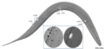
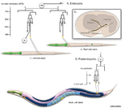
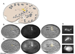
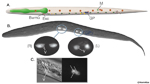
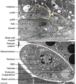

Handbook - Hermaphrodite
Coelomocyte System
4 List of coelomocytes
5 References
Figures  CcFIG 1 - Coelomocytes in the adult hermaphrodite  CcFIG 2 - Coelomocyte lineage  CcFIG 3 - Two pairs of Cc's  CcFIG 4 - Coelomocytes in L1  CcFIG 5 - EMs of coelomocytes